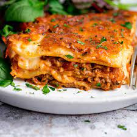

The Amazing Lasagna recipes
This recipe contain all Veg ingredients and also contain no onion and garlic

Lasagne is a wonderful Italian dish
Ingredients
- Lasagne paste
- Tomatoes
- Cheese
- Capcicum
Steps
- Cooked the Vegetable
- chooped the Tomatoes
- place everything on the lagagne paste
- Add cheese
- Cook in oven for 20 mins
- Offered to the Lord